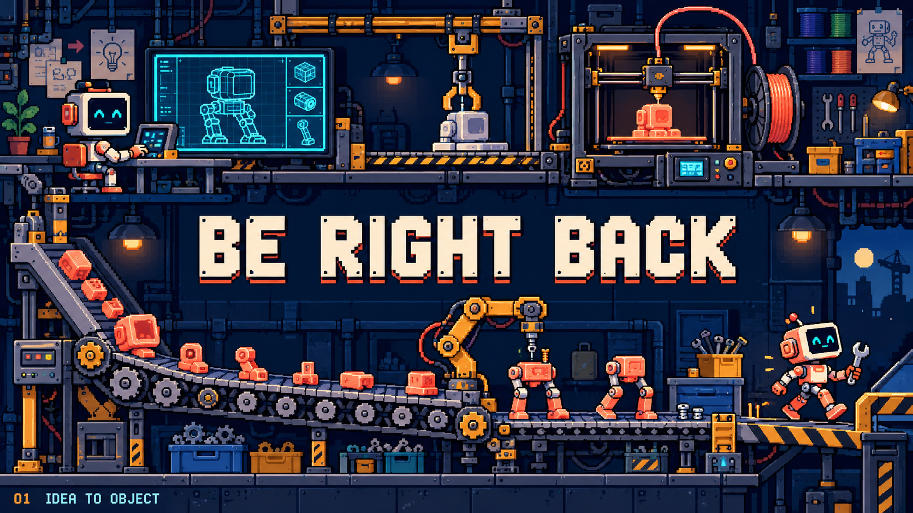

Can the factory tell a little story?
A 12-second Blender motion study. Three compositions of the same sequence—not final pixel-art fidelity. Inspect the print, transfer, assembly and first steps before choosing a production approach.
The nozzle traverses while the body grows layer by layer.
The entire production line stays visible. The message has a fixed, protected area.
Every moving object is modeled and animated locally. No generated image is used as the animation background. The detailed concept below is the visual target; this prototype evaluates staging and motion. C deliberately follows the action and crops the sign—it is an inspection shot, not a finished BRB composition.
Compare with the approved still concept

Source: Blender scene and animation script · Question, method and provisional findings. No broadcast settings are changed.